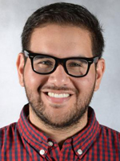
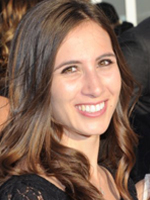
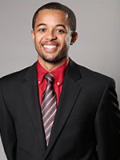
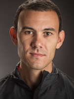
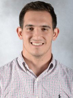

The U Interns
Alex Schwartz
Assistant Director of Communications, Miami Hurricanes
UM Communications Intern, Aug-Dec 2013
"I think my internship in the office is a huge part of the reason I now work there full-time. For one, it provided the opportunity to form relationships with people who could, a year later, vouch for my abilities when the position was open."
Schwartz interned with communications in the fall of 2013. After 10 months in the Miami Marlins' broadcasting department, Schwartz returned to his alma mater when an Assistant Director of Communications position opened.
Currently, Schwartz serves as the primary media relations contact for Hurricane Women's Basketball, Soccer and Women's Tennis. Schwartz is responsible for the day-to-day promotion of student-athletes and coaches, content on HurricaneSports.com and social media, preparation of game notes and almanacs and the update of statistics and records for his assigned sports.
Alejandro Rengifo
Assistant Director of Marketing, Miami Hurricanes
UM Marketing Intern, Jan-Jun 2013
"The connections I made as an intern were crucial at helping me land the position I have today. I kept in touch with the supervisors I had during my internship and they helped me land a job at Boston College and before I knew it I was reached out to by those same supervisors for a job back here at my alma mater."
Rengifo interned with marketing in the spring of 2013. When the position opened in late 2014, UM hired Rengifo as the Assistant Director of Marketing.
In his current role, Rengifo is responsible for the development and execution of a comprehensive and strategic marketing plan for the University of Miami Baseball and Women's Basketball programs. Additionally, he works with the Director of Marketing to lead all phases of the marketing plan including advertising, community events and game day atmosphere.
Madeline Hasbrouck
Marketing Assistant, Miami Hurricanes
UM Marketing Intern, Sep 2010-Feb 2011
"Athletics Marketing involves a lot of small details that make a big difference in the impact of our work. As an intern, I was able to master these small details that go into my current job. Once you’re on the job, you are expected to learn and execute quickly. My prior knowledge has helped me to quickly meet the demands of my current position."
Hasbrouck interned with marketing as a freshman in the fall and winter of 2010-11. She remained involved in the athletic department all four years as a football operations intern and student-athlete tutor.
After graduating, Hasbrouck returned to her hometown near Boston and was hired by Boston College. When the position opened in fall 2015, she returned to her alma mater as the Marketing Assistant.
Claire Miller
Marketing & Broadcasting Coordinator, Los Angeles Dodgers
UM Communications Intern, Jan-Dec 2012
"Currently, I do marketing for the Los Angeles Dodgers but I started in the public relations department. Much of what I did while in PR, I learned while interning in the Athletic Department such as writing press releases, feature stories, mediating press conferences and working closely with the media and athletes."
Miller interned with communications in 2012. The experiences and skills she learned at UM helped her land a position as the Public Relations Associate for the Los Angeles Dodgers.
After spending the 2014 season as the Dodgers' PR Associate, Miller was named to her current postion as Marketing & Broadcasting Coordinator in January 2015.
Brandon Myles
Season Ticket Services & Retention Coordinator, Miami Heat
UM Marketing Intern, Aug-Dec 2012
"Accepting the UM Marketing Internship was one of the best decisions of my life! From a wide eyed kid straight out of grad school to a UM intern and then offered a full-time position, I pretty much grew up in my professional career at UM. They gave me the tools and confidence to be the best version of me everyday. Without them giving me an opportunity, I'm not sure where I would be in life."
Myles interned with marketing in the fall of 2012. When a position opened in early 2013, UM hired Myles to be an Assistant Director of Marketing.
In October 2014, after over two years at Miami, Myles accepted a position with the Miami Heat as their Coordinator of Season Ticket Services & Retention.
Alexander Aguiar
Social Media Coordinator, Maryland Terrapins Football
UM Communications Intern, Nov 2012-July 2013
"I always enjoyed working with and around Sebastian the Ibis while interning at Miami. Going to the NBA Finals at the American Airlines Arena with him was a lot of fun and I don’t think I’ll ever forget what that experience was like."
Aguiar interned with communications in 2012-13 while he was home in Miami from the University of Michigan. The experience and skills gained during his time at Miami allowed him to land his current job upon graduation.
Aguiar just completed his second season as the Social Media Coordinator for University of Maryland's football team.
Eric Todoroff
Digital Media Specialist, Florida State Seminoles
UM Communications Intern, Jan-Aug 2014
"I was lucky enough to work in a department that invested in me. So when I applied to my current position, they made the calls and I honestly believe if it wasn’t for [UM Associate AD] Brian [Bowsher] and [UM Assistant AD] Tom [Symonds], I wouldn’t be in Tallahassee."
Todoroff interned with communications in the spring and summer of 2014. When the position opened in September 2014, UM hired Todoroff to be the Marketing & Communications Assistant.
A year later, Todoroff returned to his alma mater, Florida State, as the athletic department's Digital Media Specialist.
Taylor McKillop
Communications Graduate Assistant, St. John's Red Storm
UM Communications Intern, Jan-May 2015
"While I was at Miami I really enjoyed the office environment and the people I was working for. It was a perfect balance of learning experiences in both a work atmosphere and life in general."
McKillop interned with athletic communications in the spring of 2015. The experience McKillop gained while at Miami allowed him to immediately land a job as a graduate assistant at St. John's in June 2015.
Currently, McKillop serves as the primary media relations contact for St. John's track and field, cross country, lacrosse, and men's and women's tennis and as the secondary contact for women's basketball. McKillop writes press releases and feature stories that appear on RedStormSports.com. Additionally, he organizes press conferences, conducts interviews and assists with St. John's broadcast operations for soccer, volleyball and basketball.